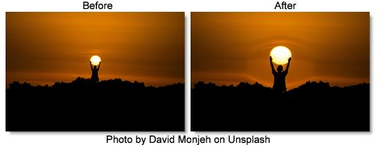

S_WarpMagnify
Description
Magnifies an elliptical region of the image to create a glass lens refraction effect.
The S_WarpMagnify filter comes from the Emmy award winning Boris FX Sapphire filter set.
Category
Lens.
Controls
Presets
To select a preset, pick one from the Presets window.
Magnify Amount
Amount to scale the image within the magnified region. Use values below 1 to shrink the image instead within the lens.
Magnify Rel X & Y
The relative horizontal and vertical magnification.
Lens Center
The center of the lens shape.
Lens Radius
Radius of the inner part of the lens. Within this region, the image is scaled by the full magnify amount.
Lens Edge Width
The width of the lens edge, as a fraction of the inner radius. In the edge area of the lens, magnification tapers off from the full magnify amount to no magnification.
Lens Rel Height
The relative vertical size of the lens. Increase for a taller ellipse or decrease for a wider one.
Lens Rel Width
The relative horizontal size of the lens. Increase for a wider ellipse or decrease for a taller one.
Lens Rotate
Rotation in degrees of the lens. Note that rotation will have no effect when Rel Width and Rel Height are equal and the shape is a perfect circle.
Lens Edge Shape
Determines the curve of the magnification amount within the edge of the lens. If set to 0, magnification tapers off linearly. If set to 1, magnification tapers off in a smoother curve which can reduce the visual perception of the border of the lens. Other values interpolate between the two.
Wrap X & Y
Determines the method for accessing outside the borders of the image.
No
Renders black beyond the borders.
Tile
Repeats a copy of the image.
Reflect
Repeats a mirrored copy. Edges are often less visible with this method.
Filter
If enabled, the image is adaptively filtered when it is resampled. This gives a better quality result when parts of the image are warped smaller.
Crop Input
These 4 parameters, Crop Top, Crop Bottom, Crop Left, and Crop Right, allow selecting a rectangular subsection of the image to be processed. If the Wrap parameters are set to No, the exposed borders will be transparent. If the Wrap is Tile or Reflect, the image is wrapped on the new cropped borders to fill the frame. This can make it easier to avoid artifacts due to distorting an image with bad edges.
Show Edge Width
Enables/disables the on-screen control for adjusting the Lens Edge Width parameter.
Show Lens Radius
Enables/disables the on-screen control for adjusting the Lens Radius parameter.
Show Lens Rotate
Enables/disables the on-screen control for adjusting the Lens Rotate parameter.
Show Lens Center
Enables/disables the on-screen control for adjusting the Lens Center parameter.